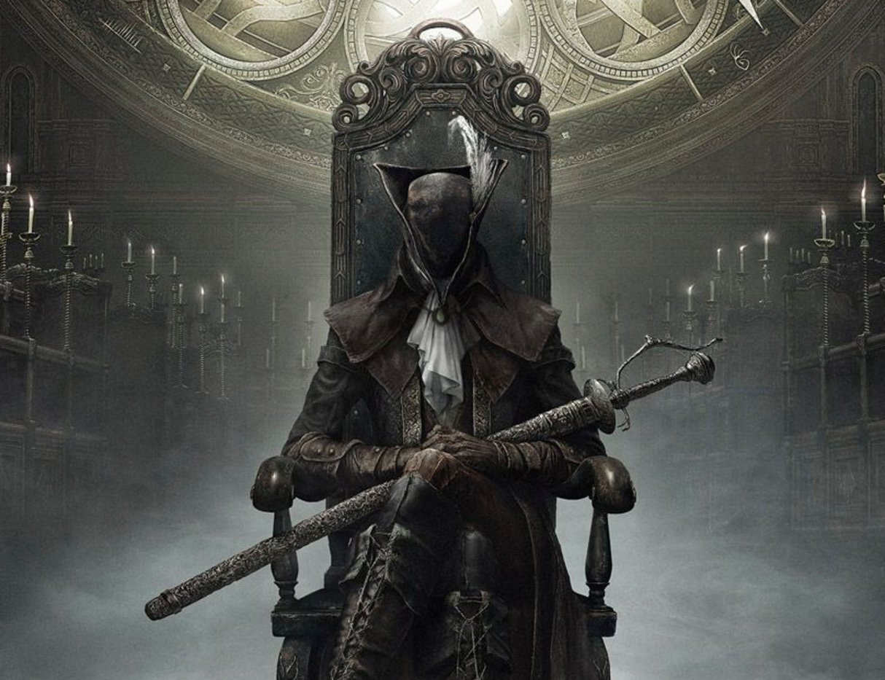

Below Yharnam, in a labyrinth they called the Tomb of the Gods, the Healing Church found traces of mythical beings they called 'The Great Ones'.
Their research in the tombs led them to find blood known as 'The old blood'.
They found that ministration of this blood could cure the host of disease and grant direct health benefits. They did not know the scourge that would follow...

When the Hunter arrives in Yharnam, it has already been overtaken by the scourge of beasts rampant in the streets.
The Hunter has been sent to Yharnam in search of 'Paleblood' and must conquer it's beasts and unravel it's mysteries to find the truth.